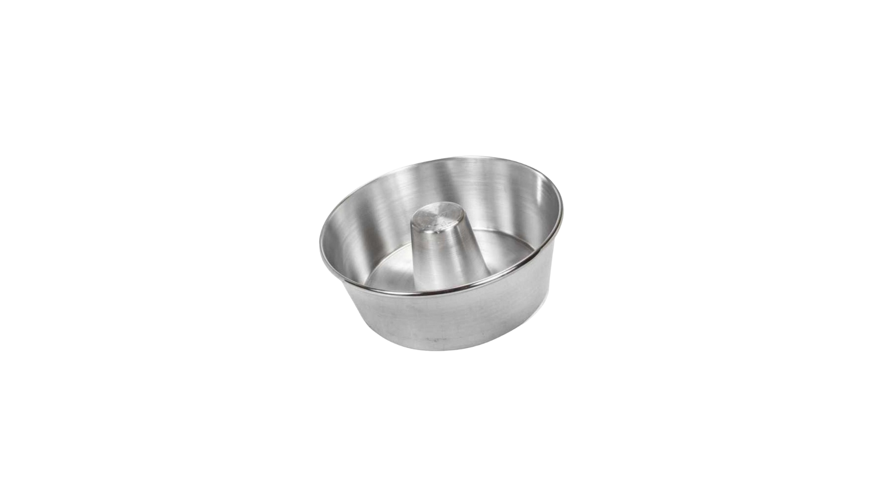
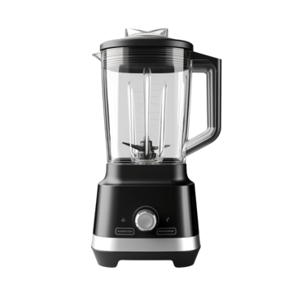
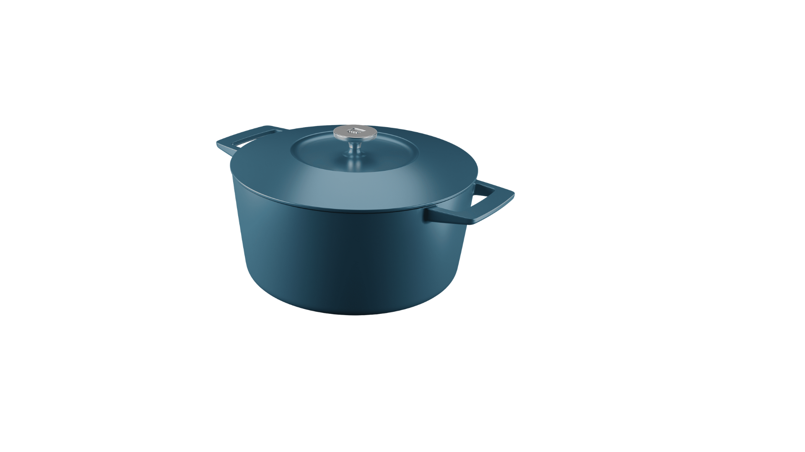

Pudim

Ingredientes
- Para a calda :
- 1 xícara de açúcar
- 1/2 xícara de água
- Para o pudim :
- 1 lata de leite condensado
- 2 latas de leite (use a lata de leite condensado para medir)
- 3 ovos inteiros
Utensílios

Forma para Pudim

Liquidificador

Panela

Batedor de Arame
Ao clicar em comprar você será redirecionado para o site da Amazon.com.br
Modo de Preparo
- Para a Calda: Em uma panela, derreta o açúcar em fogo baixo, mexendo sempre, até obter um caramelo dourado. Adicione a água cuidadosamente e continue mexendo até o caramelo dissolver. Despeje a calda na forma de pudim, espalhando por todo o fundo e laterais. Reserve.
- Para o Pudim: No liquidificador, adicione o leite condensado, o leite e os ovos. Bata por cerca de 2 a 3 minutos, até que a mistura esteja homogênea.
- Despeje a mistura do liquidificador sobre a calda na forma.
- Asse em banho-maria em forno pré-aquecido a 180°C por cerca de 1 hora e 30 minutos, ou até que, ao espetar um palito, ele saia limpo.
- Deixe esfriar completamente antes de levar à geladeira por pelo menos 4 horas.
- Para desenformar, aqueça rapidamente o fundo da forma em água quente e vire o pudim sobre um prato.
- Bom apetite!